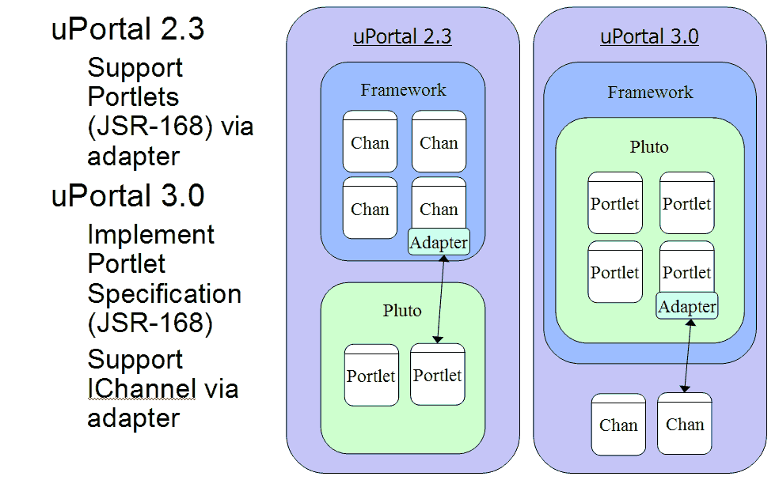

The uPortal community would like uPortal to support Portlets. Portlets are java technology-based web components described in the JavaTM Portlet Specification developed by the JSR 168 Expert Group. It has been proposed that Portlet support is introduced to uPortal in 2 phases. The first phase exposes Portlets to the uPortal container though a Portlet-to-Channel adapter. The second phase entails major changes to the uPortal framework as it replaces the Channel with the Portlet as the main component managed by the portal.
The work completed in Phase 1 will be released to the community as part of uPortal 2.3. Other uPortal features unrelated to Portlets may also be included in uPortal 2.3. Phase 2 will be released as uPortal 3.0. Both releases will contain a Portlet container supplied by the Apache Pluto project.
